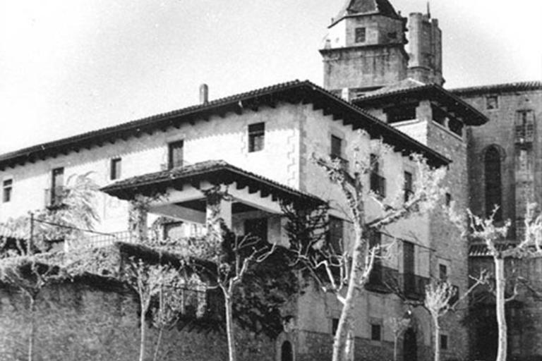

Visita · Montgrí
El Palau Reial o Palau lo Mirador és a l'espai anomenat la cellera al mig de la vila de Torroella de Montgrí , a la comarca del Baix Empordà, al límit amb l'Alt Empordà, prop de la Costa Brava,…